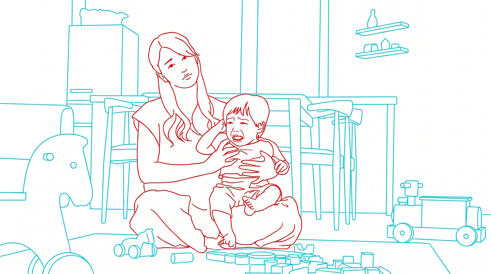

育児スタイル診断
「ちゃんとしなきゃ」と一人で抱え込んでいませんか？子育てに、誰にでも当てはまる完璧な正解はありません。まずはご自身のタイプを知ること。肩の力を抜いて、あなたと家族に「ちょうどいい」カタチを、ここから一緒に見つけませんか。

×
Q1 / 4
眠れない夜、ふと「私、何のために生きてるんだっけ…」と無の感情になることがある。
Q2 / 4
SNSの「生後〇ヶ月のルーティン」等の投稿を見ると、参考になるより焦りを感じる。
Q3 / 4
泣いている我が子を見ると、「私がダメな母親だからだ」と自分を責めてしまう。
Q4 / 4
人に子どもを預けるくらいなら、自分が無理をしてでも一緒にいた方がマシだ。